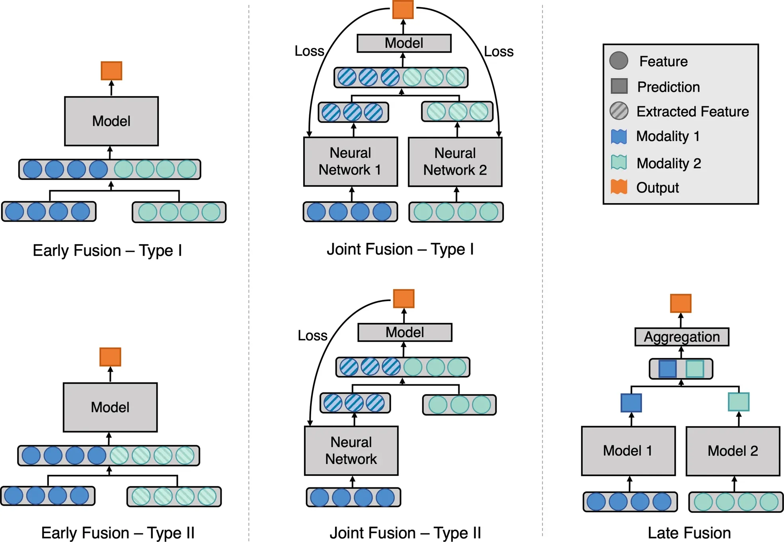
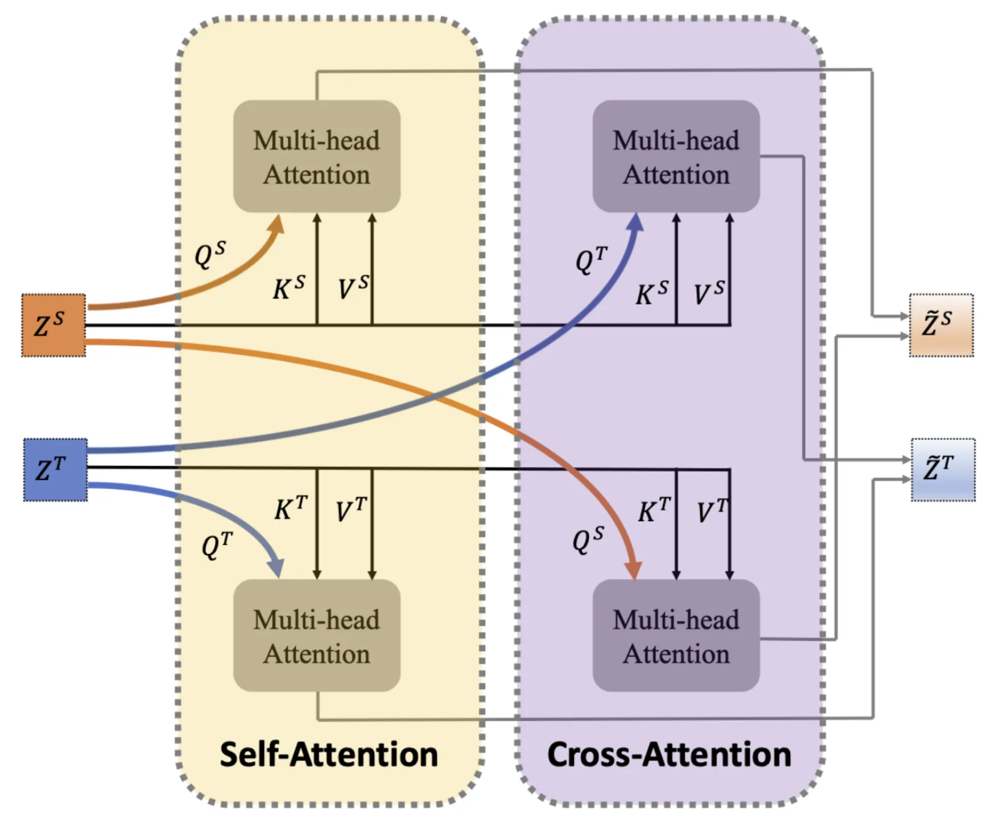

written by Eric J. Ma on 2024-05-27 | tags: deep learning multi-modal learning data fusion protein sequences biomedical texts gradient descent semantic alignment masked language modelling model architecture embedding conversion
In this blog post, I explore multi-modality deep learning based on two papers from the biomedical world, in which we explore the definition of data modalities, what fusion is and how it takes place within a model, and possible training objectives. In this post, I also considers how to utilize these models with only one input modality available, highlighting the potential for protein function prediction and sequence generation. How can multi-modal deep learning transform our approach to complex data analysis?
What is multi-modal deep learning? It is perhaps better named "multi-modality" deep learning to help distinguish it from probability distributions with multiple modes. (This is both the statistician and deep learning personalities in me speaking simultaneously.) Modality refers to data modalities like text, video, and audio. However, if we go into the subfields of application, multi-modality can refer to granular data types. For example, within biology, we may call an ATAC-Seq dataset to be one data modality, functional assay data from a high throughput screen another, and multiple sequence alignments yet another, even though they strictly speaking are tabular, tabular, and string data.
To understand what multi-modality deep learning is, I am going to review and summarize content from two papers:
When training a multi-modality deep learning model, a critical point is how to fuse the various modalities. Here, there are multiple ways of doing so, with the best review coming from Huang et al. (2020):

We see the major fusion types:
Early fusion is when data modalities are fused early on. Type I early fusion is where we directly fuse (concatenate, add, multiply, or whatever operation is chosen) modalities together before being input into the model. Type II early fusion instead takes extracted features for one or more data modalities as the input to the neural network model. A distinction can be made between extracted features and calculated features. For example, with two distinct imaging modalities, one may calculate a Fourier transform (calculated feature) of the first imaging modality and flatten it into a vector while passing the second image through the CLIP model to obtain an extracted feature instead. Both become vectors that can be concatenated and fed into a downstream model. As another example, one can pre-train encoder-only models for protein sequences and biomedical texts through masked language modelling and then use extracted features from those pre-trained encoder-only models as embeddings for downstream usage.
Joint fusion is when two or more data modalities are fused at the level of extracted features. Here, a distinction is made between early fusion and joint fusion. In early fusion, the output is compared to ground truth and a loss score is calculated, from which we tweak the model's (say, a neural network) parameters to minimize the loss. The loss does not affect how the calculated or extracted features are generated. With joint fusion, the loss function affects how the feature extractor performs by back-propagating the gradient of the loss function w.r.t. the neural network's parameters.
Late fusion, however, is distinguished by having individual models perform a prediction, on which an aggregation model then combines them. This can be compared to model stacking in Kaggle competitions, where one trains a Random Forest, a Logistic Regression, an XGBoost, and an SVM model to produce a prediction. Then, a final model is trained on top of the individual model's predictions to produce a final model prediction.
How do we train a multimodality model? The most obvious answer is "gradient descent!" But that would be facetious. Instead, we must ask, "What are you trying to make the model do?" To answer that question, we must first understand the model's training objectives. I will focus on how Xu et al. did so in the ProST paper.
The ProST paper's first objective is masked language modelling on a single data modality. Specifically, the authors randomly mask 15% of residues and predict each masked token, using cross-entropy as the loss function. The loss function at the end compares the masked positions' probabilities against the ground truth (which might be one-hot encoded). In code, it'd probably look like this:
import jax import jax.numpy as jnp def binary_cross_entropy(predicted, actual): epsilon = 1e-7 predicted = jnp.clip(predicted, epsilon, 1.0 - epsilon) return -jnp.sum(actual * jnp.log(predicted) + (1 - actual) * jnp.log(1 - predicted)) def unimodal_mask_loss(predicted, actual, masked_positions): # predicted is of the shape (protein_length, alphabet_size) # actual is of the same shape # masked positions is an indicator tensor of shape (protein_length), used to ensure that only masked positions are what loss is calculated on # Mask the predictions and actuals predicted_masked = predicted * masked_positions actual_masked = actual * masked_positions # Compute the binary cross-entropy loss on the masked positions loss = binary_cross_entropy(predicted_masked, actual_masked) # Normalize the loss by the number of masked positions num_masked_positions = jnp.sum(masked_positions) loss = loss / num_masked_positions return loss
This standard learning objective ensures that the protein language model "learns" the presumed complex grammar associated with evolutionarily generated sequences.
At the same time, to ensure that embeddings between pairs were semantically aligned, the authors of the ProST paper use a contrastive loss as well. Focusing on the specific loss function that the authors use - the InfoNCE (Info Noise Contrastive Estimation) loss - which has several key features:
sim(modality1_embedding, modality2_embedding), that calculates the similarity between the embeddings of pairs of samples (whether it is a "positive" (paired) or "negative" (non-paired) set). This is a generic function that requires that the two embeddings be of the same size.temperature parameter which controls the sharpness of the similarity scores. The higher the temperature, the less sharp the score will be, meaning that the difference between positive and negative pairs will be less pronounced, so there'll be less contrast.In JAX code, here's an example of what InfoNCE might look like:
def info_nce_loss(image_embeddings, text_embeddings, temperature=0.07): # Compute similarity matrix # This should be a square matrix of shape (batch, batch) sim_matrix = cosine_similarity(image_embeddings, text_embeddings) / temperature # Positive samples are on the diagonal of the similarity matrix positive_samples = jnp.exp(jnp.diag(sim_matrix)) # Calculate the denominator of the InfoNCE loss sim_matrix_exp = jnp.exp(sim_matrix) denominators = jnp.sum(sim_matrix_exp, axis=1) # Calculate the InfoNCE loss loss = -jnp.mean(jnp.log(positive_samples / denominators)) return loss
And in pictorial form, using a batch size of 3 for illustration purposes:
This objective is presumably important because aligning embeddings ensures semantic similarity in embedding space for pairs of input data.
The third loss function that the ProST authors use is a cross-modality masked modelling loss function. This one is similar to the single-modality masked modelling task, except that now, this involves two sub-models: a protein language model for extracting protein sequence representations and a natural language model for extracting representations of textual descriptions of a protein. These two are then fused through a self-attention module followed by a cross-attention module, which then updates the protein and textual representations. Through checking Appendix A, we can see that the author's definition of self-attention and cross-attention refer to how the input representations are used:

As seen in the figure, within self-attention, the individual representations are used as the query vector for their respective multi-headed attention module, while in cross-attention, the text representation is used as the query for the protein sequence multi-headed attention module and vice versa. Each attention module's output is then combined (through addition at an equal weight of 0.5 each) to produce an updated representation vector for each modality.
This objective is important because it produces embeddings of the protein sequence and text embeddings that are cross-modality aware.
Having studied the learning objectives in detail, the final ingredient that interests me is the actual model architecture. Unfortunately, no figure is provided here, so I had to dig through the Appendix to figure it out. Based on the textual description in Appendix A of the paper, here is my best guess representation of what the model looks like.
In the diagram, arrays have no box around them, models have a blue box around them, and loss functions have a red box around them. For the arrays, I have annotated in small text what is the array shape. For the models, small text annotations outline the essential architectural gist of the model. Small text annotations name the specific loss function used for the loss functions.
If this model architecture accurately represents the ProST model, it is a Joint Fusion (Type I) model based on the Huang et al. ontology of models. That said, its model architecture does break the Type I classification ontology as the fusion of embeddings does not happen explicitly; instead, it is implicit in the fusion module through cross-attention, producing two separate embeddings rather than a joint (concatenated, summed, or multiplied) embedding.
First, we must identify what we mean by "use the model." Let's consider a few use cases.
In this use case, the available modality is the protein sequence, and the absent modality is the textual description. One could add to the model a training objective that reconstructs a protein's natural language description of function from the protein sequence, in which the PLM embedding is used to decode the natural language description autoregressively. This is the Function Prediction arm of the model outlined in the image below.
In this use case, the available modality is the textual description, and the absent modality is the protein sequence. To satisfy this use case, just like the previous one, one could add a training objective that mirrors the previous one: reconstructing a protein's sequence from the natural language description of the function. Here, we may auto-regressively decode a protein sequence or use encoder-only architectures to produce a positional sequence weight matrix from which we sample protein sequences. This is the Protein Design arm of the model outlined in orange in the image above.
There may be another way out of the fundamental problem we're encountering. The main problem is that submodules of our models fundamentally require two inputs, given the way they are trained. With the two proposed training objectives above, we are skirting around the problem by adding more complexity in the form of new neural networks that interconvert between the two. Moreover, we already have the respective modules available in the original model!
What if we added only one objective: a neural network that converts between the embeddings, using mean squared error as the loss function? Then, if we had a single data modality as input, we could convert between the two embeddings, effectively giving us a way to construct the input to, say, the fusion module for decoding a protein sequence. In this way, we get around the missing data problem by effectively imputing the embedding, even if we don't know how to impute the original data. This is the Embedding Conversion Module outlined in green in the image above. I am unsure whether it would be better to co-train the module with other objectives or do it after pre-training, though I would lean towards the latter for simplicity in training dynamics.
When thinking about the ProST model and how to modify it, I also had a chance to think more critically about the difference between masked language modelling and auto-regressive text generation. Thanks to my teammates at Moderna, I’ve realized that masked language modelling is a more natural fit for small-scale edits (in-filling) conditioned on the rest of the sequence context. At the same time, auto-regressive text generation is a more natural fit for de novo generation.
Nonetheless, it should be clear that both model classes are usable for both applications; it’s just that they have more naturally fitting applications, respectively.
@article{
ericmjl-2024-multi-modality-deep-learning,
author = {Eric J. Ma},
title = {Multi-modality Deep Learning},
year = {2024},
month = {05},
day = {27},
howpublished = {\url{https://ericmjl.github.io}},
journal = {Eric J. Ma's Blog},
url = {https://ericmjl.github.io/blog/2024/5/27/multi-modality-deep-learning},
}
I send out a newsletter with tips and tools for data scientists. Come check it out at Substack.
If you would like to sponsor the coffee that goes into making my posts, please consider GitHub Sponsors!
Finally, I do free 30-minute GenAI strategy calls for teams that are looking to leverage GenAI for maximum impact. Consider booking a call on Calendly if you're interested!